Таб Актове и протоколи
В Актове и протоколи се визуализира информация за изготвени актове и протоколи, както и се изготвят нови актове и протоколи по заседание. Изготвяне на нов акт или протокол се извършва чрез бутон Добави , след промяна на статуса на заседание на Проведено или Отложено.
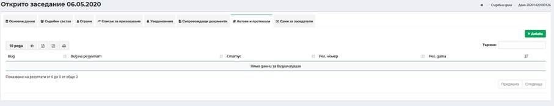
8.1.4.6.1 Добавяне на акт/протокол
За създаване на съдебен акт/протокол е задължително да се избере тип на съдебния акт, при необходимост може да се въведе секретар и да се маркират чекбоксове за атрибути на съдебния акт/протокол – финализиращ акт и подлежи на обжалване.
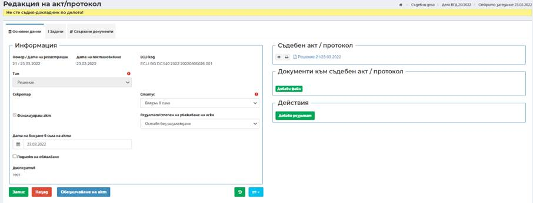
За граждански дела по ЗЗДН в поле Срок се въвежда период, за който се издава Заповед за защита или Заповед за незабавна защита.
При фирмени дела се визуализира бутон . При избор се отваря диалогов прозорец, в който потребителите могат да въведат данни, с цел информация при справка.
В случай че съдебният акт е финализиращ се маркира чекбокс Финализиращ акт.
Важно! Чекбокс Финализиращ акт задължително се маркира преди Регистриране на съдебния акт/протокол, тъй като заедно с генериране на пореден регистрационен номер на акт се генерира и ECLI номер. В случай, че чекбокс Финализиращ акт се маркира след регистриране на акта/протокола, ECLI номер няма да се генерира.
Когато съдебният акт е решение, присъда, заповед за изпълнение и заповед за защита, чекбокс Финализиращ акт е автоматично маркиран и по подразбиране се генерира ECLI номер.
След въвеждане на необходимите данни се избира бутон Запис
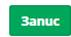
. След успешен запис съдебният акт/протокол е в статус Проект.8.1.4.6.1.1 Актове по заповедни производства
За създаване на Заповед за изпълнение и/или Изпълнителен лист по заповедните производства на база въведени структурирани данни за начин на плащане/изпълнение, обстоятелства, от които произтичат вземанията, вземания, допълнителни вземания и претендирани разноски, се избира вид на акта – Заповед за изпълнение или Изпълнителен лист в полза на частни лица и конкретния вид акт по образец – Заповед за парично вземане по чл. 410 от ГПК; Заповед за веществено вземане по чл. 410 от ГПК; Заповед за парично вземане по чл. 417 от ГПК; Заповед за веществено вземане по чл. 417 от ГПК.
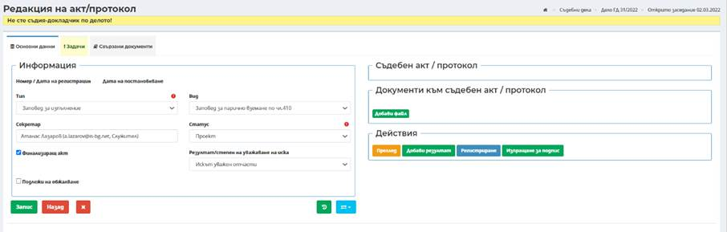
След избор на конкретния вид съдебен акт се преминава към бутон Регистриране (с което изготвения акт получава дата и номер), или директно към бутон Изпращане за подпис. При изпълнение на задачата за изпращане за подпис се генерира файл на съдебния акт и системата генерира регистрационен номер на акта. След генериране и регистриране на акта, той може да бъде прегледан от секция Съдебен акт/протокол.
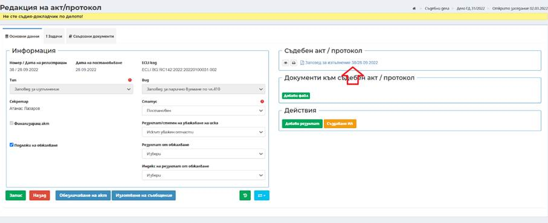
Следващите действия по тези съдебни актове са аналогични на обработката на всички останали съдебни актове и протоколи по общите функционалности на системата.
Забележка: При наличие на въведени структурирани данни по заповедните производства, актовете се генерират автоматично от системата по предварително заложен образец и не е необходимо да се изготвят във вградения текстов редактор.
След изготвяне и подписване на Заповед за изпълнение се генерира бърз бутон Създаване на ИЛ
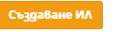
. При избор на бутона се отваря поле, в което автоматично се зареждат следните данни:
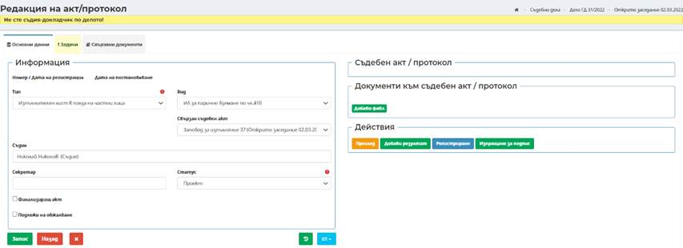
През бутон Преглед има възможност да се прегледа генерирания Изпълнителен лист.
Последващите стъпки са използване на бързо бутон Регистриране, с което акта получава Регистрационен номер и дата на регистрация и изпращане на нова задача за подпис на съдебен акт.
Важно! Системата дава възможност за избор на съдия, различен от съдията-докладчик, който да издаде Изпълнителния лист.
След подписване с електронен подпис, в поле Съдебен акт/протокол се генерира Изпълнителен лист, който може да бъде прегледан и разпечатен, посредством бутоните преди него.
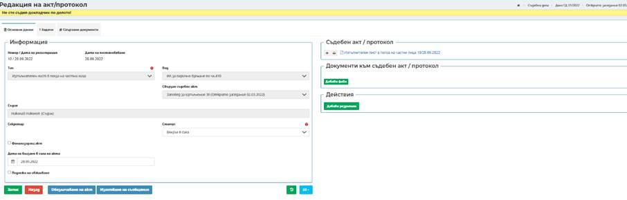
Посредством избор на бутон Добави резултат
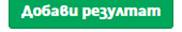
, се дава възможност за въвеждане на резултата от проведеното заседание.
8.1.4.6.1.2 Актове по ЗЗДН
За създаване на Заповед за защита или Заповед за незабавна защита по производства по ЗЗДН на база въведени структурирани данни се избира тип на акта – Заповед за защита или Заповед за незабавна защита и образец от поле вид на акта – Заповед за защита или Заповед за незабавна защита .
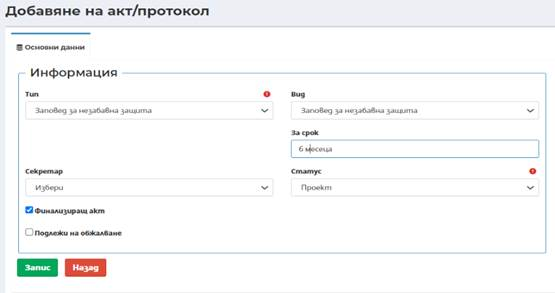
Забележка: За попълване на всички данни в образеца на Заповед за защита или Заповед за незабавна защита е необходимо освен данните за страните по делото и съответния съдебен акт (решение/определение) по заседанието на основание, на което се издава заповедта, да е изготвен, регистриран и подписан в системата.
След избор на конкретния вид съдебен акт (Заповед за защита или Заповед за незабавна защита) се преминава към създаване на задача за Изпращане за подпис. При изпълнение на задачата за изпращане за подпис се генерира файл на съдебния акт и системата генерира регистрационен номер на акта. След генериране и регистриране на акта, той може да бъде прегледан от секция Документи към съдебен акт/протокол.
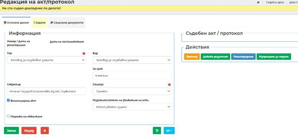
Следващите действия по тези съдебни актове са аналогични на обработката на всички останали съдебни актове и протоколи по общите функционалности на системата.
Забележка: При наличие на въведени структурирани данни по гражданските дела по ЗЗДН, актовете се генерират автоматично от системата по предварително заложен образец и не е необходимо да се изготвят във вградения текстов редактор.
8.1.4.6.2 Вписване/обявяване на акт в АИСТН
По търговски дела образувани по следните шифри (21111-1, 21111-2, 24111-1, 24111-2) в екранът за изготвяне на съдебен акт се визуализира чек бокс Вписване/обявяване в АИСТН, който чек бокс се маркира, в случай че актът е необходимо да се обяви в АИСТН.
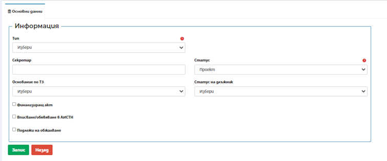
След подписване на акта е необходимо да се изготви свързан документ към акта от таб Свързани документи в екрана на подписания акт. В номенклатурата на писмата в поле Точен вид документ и Бланка са добавени следните писма:
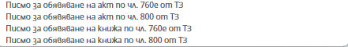
Забележка: За да се изпрати акт за обявяване към АИСТН, задължително условие е да се избере един от посочените документи на картинката, в противен случай документа няма да бъде изпратен към АИСТН.
8.1.4.6.3 Изготвяне на акт
Изготвяне на съдебен акт/протокол става посредством избор на бутон Изготвяне на акт
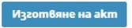
.
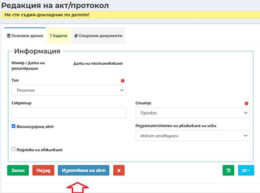
Системата предоставя възможност за изготвяне на акта по два начина:
- Чрез ръчно въвеждане на текста на съдебния акт;
- Чрез функционалността „ Voice 2 Text“
И в двата случая на екрана на ЕИСС се визуализира се вграден текстов редактор за изготвяне на съдебен акт. Екранът е разделен на три секции – уводна (заглавна) част, основна част и диспозитив на съдебния акт/протокол.
Уводната част се генерира от системата чрез използване на въведените структурирани данни по заседанието и добавяне на акта/протокола и не може да бъде редактирана от потребителя.
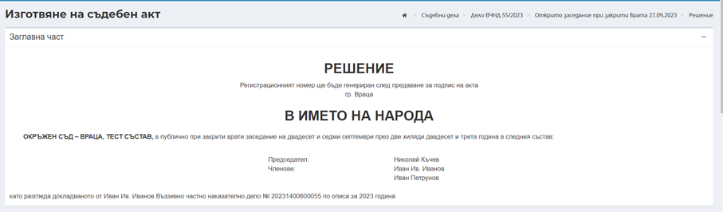
В основната част на съдебния акт/протокол има възможност чрез вградения текстов редактор да се въвежда директно текста на съдебния акт/протокол или посредством копиране от външен файл (създаден извън системата) да се прехвърли във вградения текстов редактор.
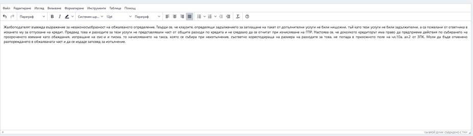
При необходимост от допълване на текста на съдебния акт/протокол или допълнително форматиране посредством наличните инструменти на вградения текстов редактор се извършват съответните промени.
В секция Диспозитив се въвежда текста на диспозитив – чрез директно въвеждане в текстово поле или посредством копиране от външен файл (създаден извън системата) да се прехвърли в текстовото поле.
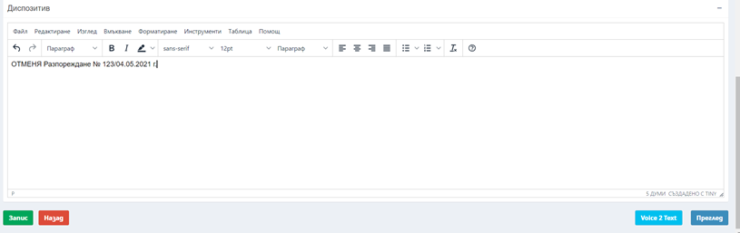
Забележка: Думите Определи, Реши, Постанови се добавят от системата и не е необходимо да се въвеждат от потребител.
Изготвената версия на съдебния акт/протокол може да бъде прегледа посредством избор на бутон Преглед
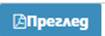
, след което се генерира файл във pdf формат, който може да бъде записан локално на компютъра на потребителя или да бъде отворен за преглед.След отваряне се визуализира изготвения съдебен акт/протокол.
В случай, че потребителят реши да използва функционалността „Voice 2 Text“ е необходимо да има създаден профил в системата „Voice 2 Text“ и да достъпва ЕИСС със същия КЕП, с който е достъпвал „Voice 2 Text“. В случай, че потребител няма профил в системата „Voice 2 Text“ се визуализира следното съобщение:
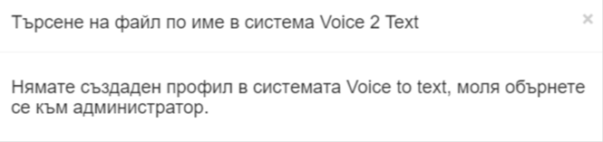
Бутон е раположен в долния десен ъгъл на текстовия редактор.
След избор на бутона, потребителят избира КЕП и въвежда ПИН код на КЕП.
Забележка: В случай, че потребител отвори в нов таб същия акт и избере бутон „Voice 2 Text“ , ще е небходимо повторно да се аутентикира.
На потребителския екран се зарежда модален прозорец с възможност за търсене на файл по име в системата „Voice 2 Text“. Потребителят има възможност в поле „Въведете име или част от име на файл“ да въведе пълно или част от наименование на файла с текста, както го е наименувал в системата „Voice 2 Text“.
След въвеждане на наименованието се избира бутон „Търсене“ и в меню „Изберете файл за изтегляне на съдържанието“ се зареждат файлов/е, отговарящ/и на зададените критерии за търсене.
Забележка: Всеки потребител има достъп до създадените от него файлове във V2T.
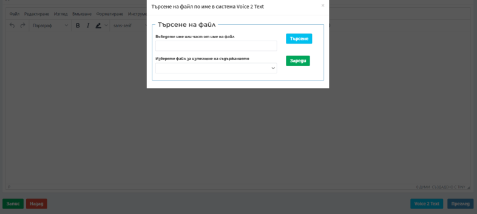
От падащия списък се избира файла, който ще бъде поставен в текстовия редактор на ЕИСС и се избира бутон „Зареди“
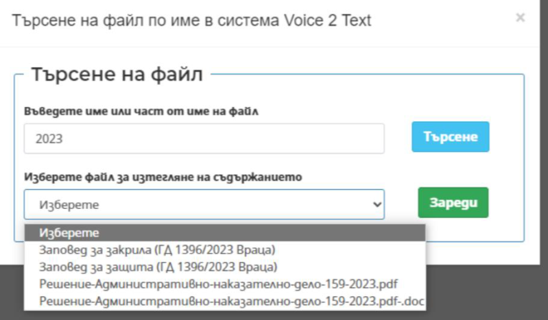
След избор на бутон „Зареди“ се визуализира следното съобщение „Съдържанието на избрания файл е копирано в клипборда.“, с което текстът се запазва временно в буферна памет и е готов за поставяне в текстовия редактор.
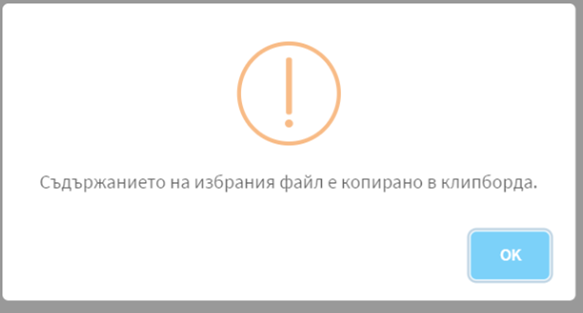
Потребител избира „ОК“ и маркира с мишката определено място в текстовия редактор в Мотивната или Диспозитивната част. След това чрез комбинация Ctrl+V от клавиатурата или десен бутон на мишката и избор на функцията „paste“ поставя текста на избрано от потребителя място в редактора. След поставяне потребителят има възможност да направи корекции по поставеният текст при необходимост.
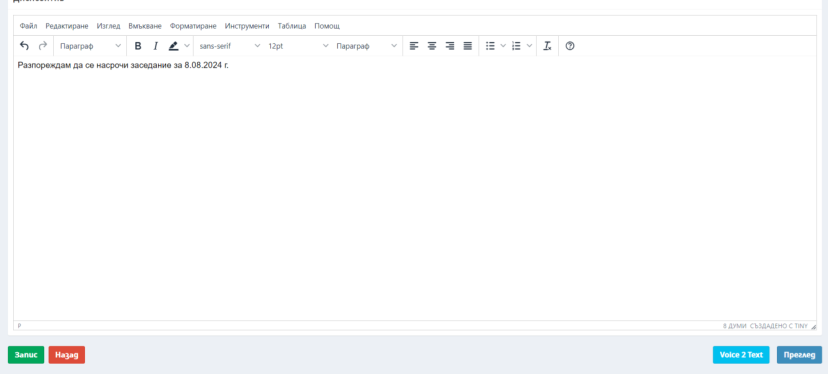
След въвеждане на всички изискуеми данни и преглед на създадения съдебен акт/протокол, се избира бутон Запис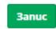
, след което се записва изготвения проект на съдебен акт. В поле Диспозитив в екрана на съдебния акт се извежда въведения при създаване на акта/протокола Диспозитив.Важно! Системата позволява въведената информация в текстовия редактор, в мотивната част на съдебния акт да се съхранява в паметта на браузъра на 10 секунди. Запазва се и съдържанието на последните 5 изготвени акта. При повторно зареждане на екрана за изготвяне на акт се визуализира напомнящо съобщение „Съществува незаписано копие на документа! Желаете ли да го заредите?“
С избор на бутон Потвърди се зареждат въведените до момента
данни. Автоматичното съхранение на данните е само локално, за финално записване
на въведеното съдържание в системата е необходимо да се избере бутон Запис.
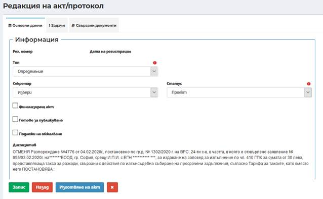
След изготвяне на съдебния акт/протокол при необходимост се преминава към насочване на задача за Изпращане за съгласуване (задачата е опционална – стъпките са описани в точка 7.7 Задача за съгласуване) или директно на задача за Изпращане за подпис (задачата е задължителна – стъпките са описани в точка 7.8 Задача за подпис).
След подписване на документа се генерира номер на документа и автоматично се приключва задачата за подписване:
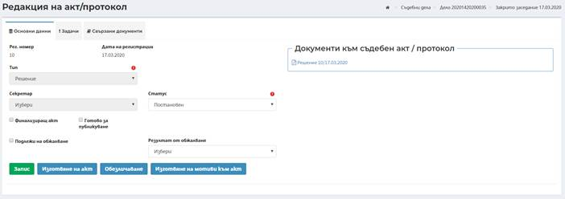
След подписване на съдебния акт/протокол от всички съдии (само съдия-докладчик или и съдии – членове при съдебен състав или и други – секретар, добавени в таб Съдебен състав по конкретното заседание, за което се изготвя съдебния акт/протокол) статусът на акта/протокола автоматично се променя на постановен.
Забележка: При необходимост от редакция на текста на съдебния акт/протокол в статус Постановен е необходимо да се създаде нова задача за подпис, с което генерираният файл на акта/протокола да бъде заменен. Системата извежда предупредително съобщение и изисква повторно потвърждаване на потребителските действия, преди промяна на състоянието на обектите. Предупредителното съобщение се визуализира в модален прозорец с информативен текст и два бутона: Потвърди и Отказ.
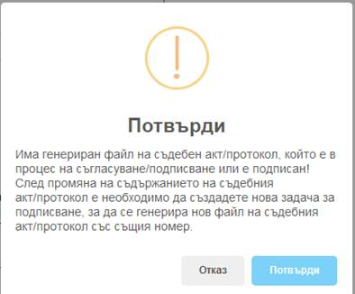
При натискане на бутон Потвърди се преминава към екран за промяна на акта/протокола и последващо създаване на нова задача за подпис, докато бутон Отказ прекратява изпълнението на действието, като остава данните по акта/протокола в системата непроменени.
8.1.4.6.4 Бутон Регистриране
След изготвяне на съдебния акт/протокол е създадена възможност само за регистриране на документа, без да бъде подписан. При избор на бутон , системата автоматично генерира номер и дата на регистрация на акта/протокола.
Забележка: тази опция може да се използва в случаите, когато е необходимо акта/протокола от съдебното заседание да вземе номер и дата в деня на делото, без да бъде подписан в същия ден!
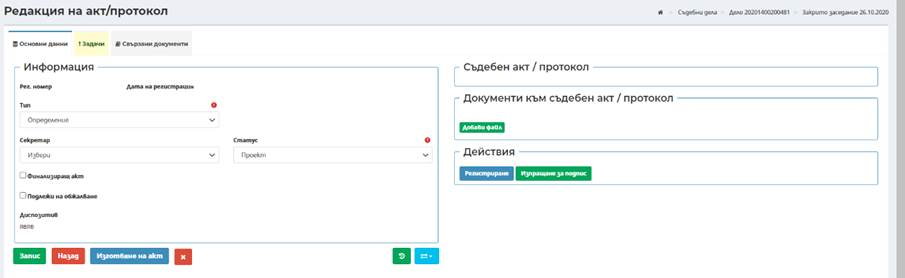
8.1.4.6.5 Бутон Изпращане за подпис
След изготвяне на съдебния акт/протокол е създадена възможност за директно изпращане за подпис без да се преминава през таб Задачи. При избор на бутон
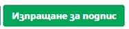
, системата автоматично създава задача за подпис и я изпраща към съдебния състав за изпълнение.
8.1.4.6.5.1 Подписване на съдебен акт без особено мнение
Подписване на съдебен акт се достъпва през лентата с инструменти за „Преглед на моите задачи“.
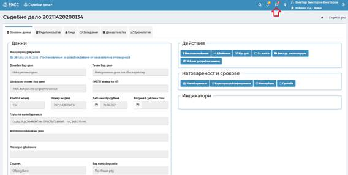
Избор на конкретна задача за подписване става посредством избор на бутон „Преглед“:
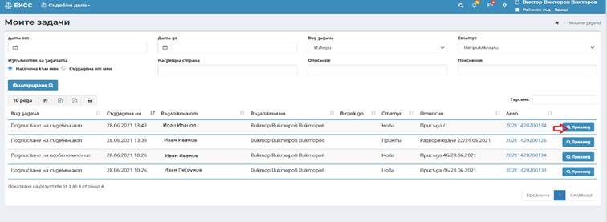
Процесът при подписване с квалифициран електронен подпис се извършва чрез няколко стъпки:
1. Избира се бутон „Приемане“:
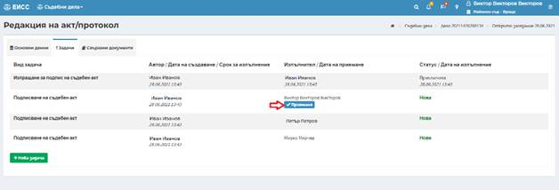
2. Избира се бутон „Изпълни“:
3. Подписването с квалифициран електронен подпис се извършва посредством избор на бутон.
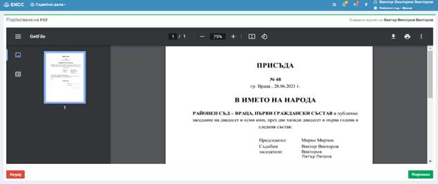
На екрана се извежда допълнителен прозорец за избор на сертификат за подписване (КЕП) и въвеждане на ПИН на КЕП.
След въвеждане на ПИН на КЕП и успешно подписване на акта, системата връща на екран актове/протоколи.
8.1.4.6.5.2 Подписване на съдебен акт с особено мнение
Създаването на особено мнение се създава след избор на конкретната задача за подписване на съдебен акт чрез бутон „Преглед“:
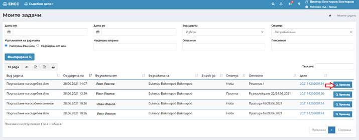
Процесът при създаване на особено мнение се извършва чрез няколко стъпки:
1. Изпраща се задача за съгласуване от съдията-докладчик, когато заседателя има особено мнение. Избира се бутон „Нова Задача“ и вида на задачата „Изпращане за съгласуване“
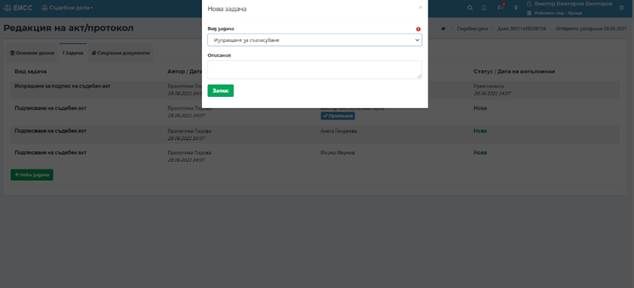
2. Избира се бутон „Изпълни“
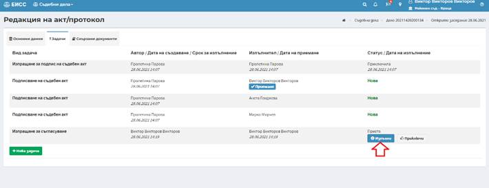
3. Заседателят избира таб „Съгласуване“
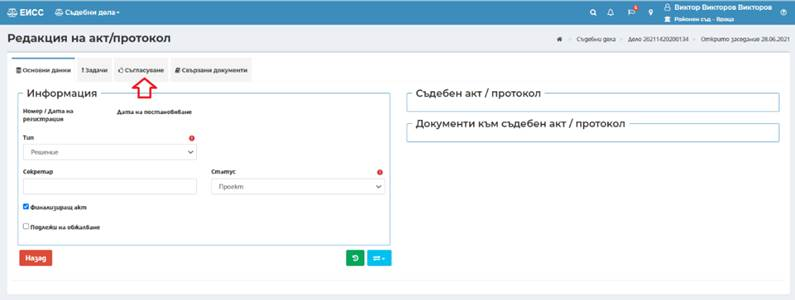
4. Избира се бутон „Редакция“ срещу името на съдебния заседател:
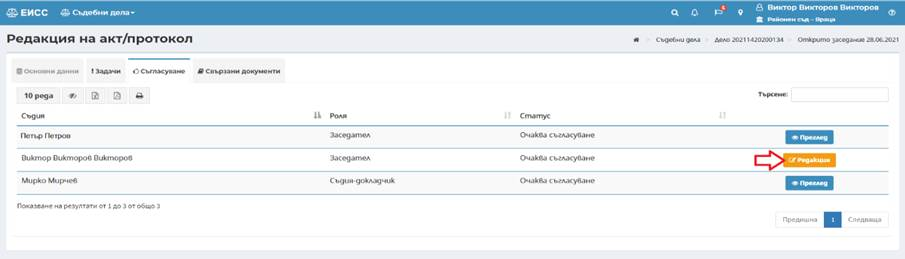
5. От падащото меню на поле „Статус“ се избира Приема с особено мнение и в секцията „Особено мнение“ се въвежда текста на особеното мнение:
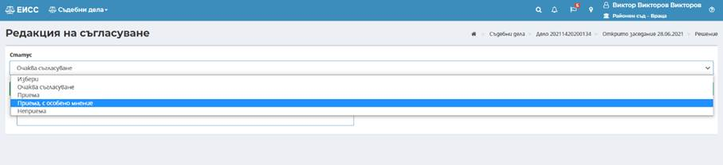
6. След въвеждане на текста се избира бутон
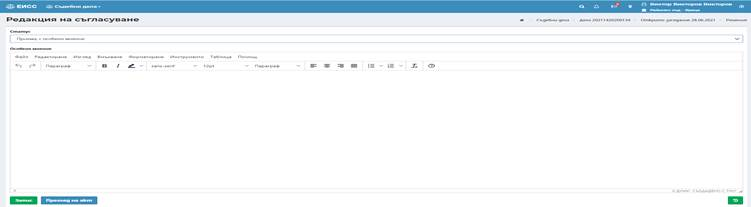
7. Съдията-докладчик избира бутон „Нова Задача“ и вида на задачата „Изпращане за подпис на съдебен акт“ и се генерират 2 задачи: „Подписване на особено мнение“ и „Подписване на съдебен акт“. Избира се бутон „Изпълни“
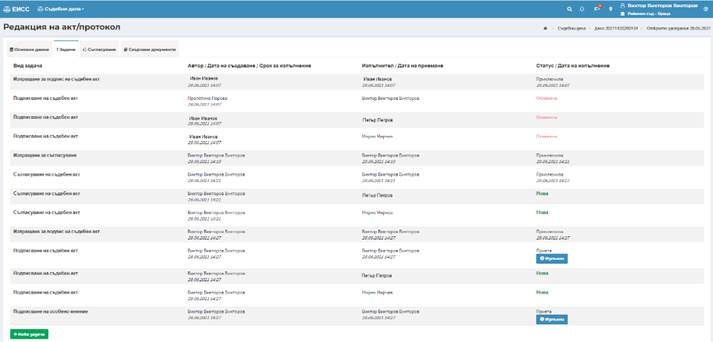
Подписване на съдебен акт се достъпва през лентата с инструменти за „Преглед на моите задачи“.
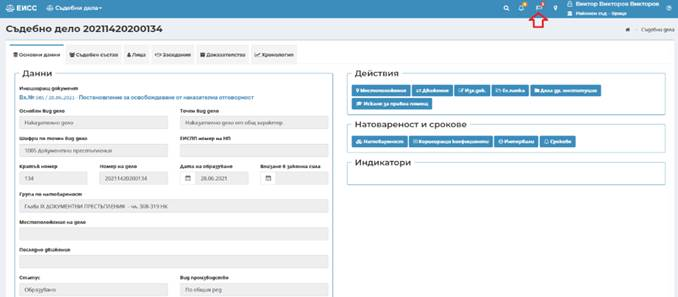
Избор на конкретна задача за подписване става посредством избор на бутон „Преглед“:
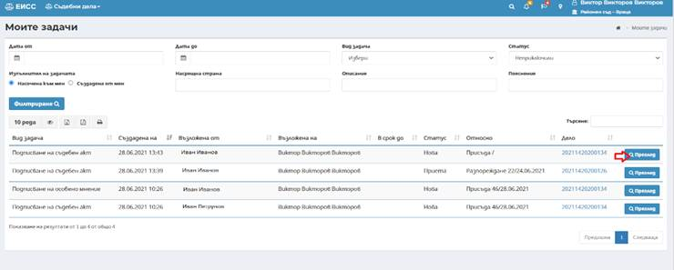
· Процесът при подписване на акт с квалифициран електронен подпис се извършва чрез няколко стъпки:
1. Избира се бутон „Приемане“
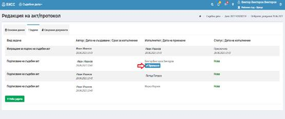
2. Избира се бутон „Изпълни“:
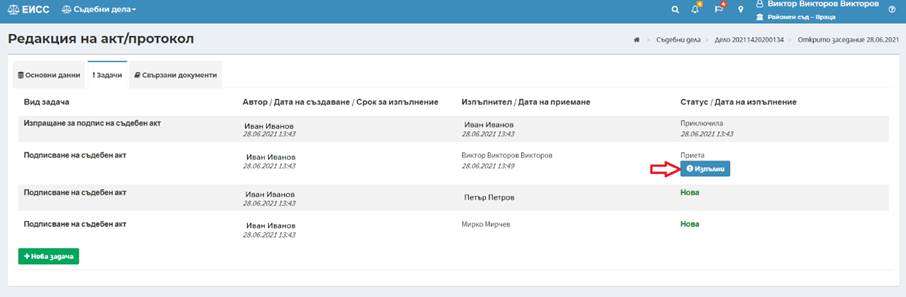
3. Подписването с квалифициран електронен подпис се извършва посредством избор на бутон.
Избира се бутон Подпиши, след което на екрана се извежда допълнителен прозорец за избор на сертификат за подписване (КЕП) и въвеждане на ПИН на КЕП.
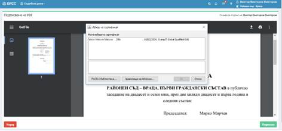
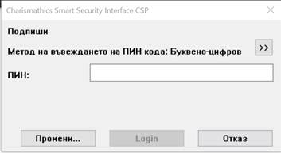
След въвеждане на ПИН на КЕП и успешно подписване на акта системата връща на екран актове/протоколи.
· Процесът при подписване на особено мнение с квалифициран електронен подпис се извършва чрез няколко стъпки:
1. Изпълнява се задачата за Подписване на особено мнение чрез бутон „Избери“
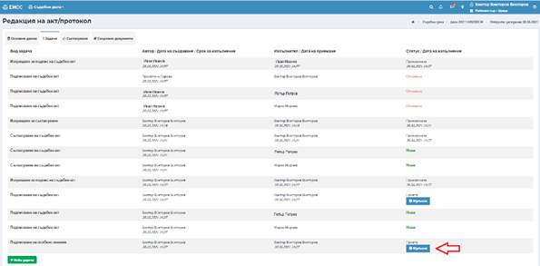
2. Подписването с квалифициран електронен подпис се извършва посредством избор на бутон, с което се отваря особеното мнение за преглед. След преглед на съдържанието на особеното мнение се избира бутон .
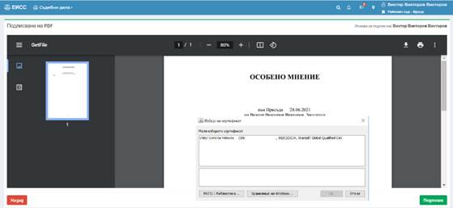
8.1.4.6.6 Обезличаване на съдебен акт
След изготвяне и подписване на съдебния акт/протокол се преминава към обезличаване на текста на съдебния акт/протокол.
Обезличаването става посредством избор на бутон Обезличаване на акт , след което се отваря екран за обезличаване.
Данните в акта/протокола, които са въведени структурирано по дело са обезличени автоматично от системата. За допълнително обезличаване на данни, които не са въведени в структурираните данни и с цел последващо използване на комбинации за обезличаване по следващи актове/протоколи по делото може да се използва функционалността за ръчно обезличаване.
След маркиране на конкретен текст от акта/протокола, той се прехвърля автоматично в поле Търси. В поле Замени се въвежда текст (абревиатури, символи и т.н.), с които да бъде заменен избрания текст.
Чрез избор на чекбокс С малки и големи букви се пренебрегва начина на изписване на текста в акта/протокола (търсенето е независимо дали текста е изписан с малки или главни букви).
След въвеждане на т.нар. двойки текстове (текст, който да бъде заменен и текст, с който да бъде заменен избрани) се избира бутон Маркирай , с което се маркират всички текстове, които съвпадат с въведените в поле Търси. Посредством избор на бутон Замени на реда на всяко намерено съвпадение има възможност за замяна на всяко съвпадение по отделно. Чрез избор на бутон Замени всички се заменят всички открити съвпадения в текста на съдебен акт.
Посредством избор на бутон Редакция има възможност за допълнителна редакция в обезличения съдебен акт/протокол.
При необходимост от обновяване на данните от оригинално съдържание, потребителя избира бутон
След замяна на всички необходими текстове се избира бутон Запис. Редакция по обезличения файл може да се правят многократно, като промените се запазват чрез бутон Запис, което предоставя възможност за поетапно обезличаване на големи съдебни актове/протоколи. След избор на бутон Финализиране , финалният вариант на обезличения акт се записва и е готов за публикуване в ЕПЕП или и в ЦУБИПСА (за финализиращи актове).
8.1.4.6.7 Обезличаване на особено мнение
След подписване на акта от целия съдебен състав по заседанието и особеното мнение, става достъпна секция Обезличаване на особено мнение.
Следва избор на бутон с името на съдията, който е подписал с особено мнение. Отваря се екран, позволяващ обезличаване.
Данните в особеното мнение, които са въведени структурирано по делото, са обезличени автоматично от системата. Приложимо е при съвпадение на имена с имена на страни по делото. Автоматично се обезличават и ЕГН, като се разпознават по формата. За допълнително обезличаване на данни, които не са въведени в структурираните данни и с цел последващо използване на комбинации за обезличаване по делото, се прилага функционалността за ръчно обезличаване, аналогична на обезличаването на актове/протоколи. Обезличеният файл може да се редактира многократно. Промените се запазват чрез бутон Запис.
Финалният вариант се качва в публичното пространство чрез избор на бутон Публикувай.
Ако в секцията Съдебен акт/протокол е визуализиран обезличеният документ и в секция Обезличаване на особено мнение липсва възможност за достъпване на файла, това значи че той е видим за обикновените потребители. В случай че възникне необходимост публикуваният файл да се свали от публичното пространство, се избира бутон в секцията за Обезличаване, с което файлът отново става достъпен за корекции и последващо публикуване.
8.1.4.6.8 Редакция на акт/протокол
Посредством избор на бутон Редакция от екрана на таб Актове и протоколи в заседанието, има възможност за редакция на данни по информация към създаден акт. Отразяване на дата на влизане в законна сила на акта.
Важно: Подписан акт не може да се коригира!
След промяна на статуса на съдебния акт/протокол на Влязъл в сила и избор на бутон Запис се визуализира поле Дата на влизане в законна сила на акта, в което се въвежда дата на влизане в сила.
Важно! Поле „Дата на влизане в сила“ се попълва автоматично при актове, които са не обжалваеми (т.е. ако няма отметка подлежи на обжалване). Като дата на влизане в сила се попълва датата на постановяване на акта. В случай че трябва да се въведе на последващ етап след избор на статус Влязъл в сила на съдебен акт се визуализира поле за въвеждане на дата на влизане в сила.
Маркиране на атрибут Подлежи на обжалване – маркира се, когато акта подлежи на обжалване. При маркиране на чекбокса се визуализира поле Резултат от обжалване и индекс на резултат от обжалване, които се въвеждат след получаване на делото от по-висшестояща инстанция с резултат от инстанционна проверка.
8.1.4.6.9 Суми
8.1.4.6.9.1 Суми към съдебен акт
Добавяне на суми към лице във връзка със съдебен акт става посредством избор на бутон Суми . Използва се за отразяване на дължащи суми, постановени за заплащане от лица по делото или за изплащане на транспортни разходи на съдебни заседатели от съдебния състав.
В екран за добавяне на суми има възможност за избор на добавяне на суми към лица по делото или сума към съдебен заседател от съдебния състав.
За въвеждане на суми по
задължения на лица по делото се избира бутон
 .
Визуализира се екран за въвеждане на суми към лицата по делото, в който се
въвеждат следните данни:
.
Визуализира се екран за въвеждане на суми към лицата по делото, в който се
въвеждат следните данни:
- Лице – избира се страна по конкретното заседание, във връзка с което се въвежда съответната сума;
- Вид сума – избира се от падащ списък с номенклатура вида сума;
- При избор от падащото меню на „Други задължения“ се визуализира допълнително поле „Наименование“, в което има възможност за въвеждане на текст/описание на задължението.
- Вид –приход или разход в зависимост от избрания вид сума;
- В полза на – избира се в полза на кого е сумата.
- Изборът на опция „В полза на страни“ се използва в случаите, когато физическо лице се задължава да заплати сума на друго физическо лице (пример: единия родител заплаща издръжка на другия родител);
- Банкова сметка – въвежда се IBAN на банкова сметка;
- BIC – попълва се автоматично от системата в зависимост от въведения IBAN;
- Име на банка – попълва се автоматично от системата в зависимост от въведения IBAN;
- Сума – въвежда се дължимата сума, определена в постановения акт по заседанието;
- Описание – въвежда се допълнителна информация при необходимост. Полето не е със задължителен характер.
След въвеждане на всички изискуеми данни и избор на бутон Запис успешно се добавя сума по съдебен акт.
Важно! В случаите на наложена глоба за лица и ако същата се заплати на време, системата позволява отразяване на плащането и издаване на Изпълнителен лист само за остатъка от дължимата сума.
Сумата, която е начислена се отразява в модул Управление->Финанси->Задължения (9.2.1).
За въвеждане на суми за изплащане по делото се избира бутон . Визуализира се екран за въвеждане на суми за съдебен заседател по делото, в който се въвеждат следните данни:
- Лице – избира се заседател по конкретното заседание, във връзка с което се въвежда съответната сума;
- Вид сума – избира се от падащ списък с номенклатура вида сума;
- Вид – приход или разход в зависимост от избрания вид сума;
- Сума – въвежда се дължимата сума, определена в постановения акт по заседанието;
- Описание – въвежда се допълнителна информация при необходимост. Полето не е със задължителен характер.
След въвеждане на всички изискуеми данни и избор на бутон Запис успешно се добавя сума по съдебен акт.
Забележка: Суми към съдебен акт се използва за всички лица по едно дело, различни от съдебни заседатели!
Сумата, която е начислена се отразява в модул Управление->Финанси->Задължения (9.2.1).
8.1.4.6.9.2 Суми по заседание
При избора на бутон системата позволява да се визуализират всички суми по акт, включително и възнагражденията на съдебните заседатели.
Забележка: През бутон суми по заседание се въвеждат само потвърдените разходи за транспорт и разноски на заседателите. Генерирането на разходен касов ордер е възможно по време на заседание, преди постановяване на конкретен акт по делото. След маркиране на добавената сума за заседател посредством , чрез бутон Разходен ордер има възможност да се изготви Разходен касов ордер, който се генерира в .pdf формат и се разпечатва.
Сумите за възнаграждения се изчисляват автоматично от системата след добавяне на сесии по заседания, по които в състава участват заседатели, след като заседанието е в статус проведено.
8.1.4.6.10 Нормативни текстове
Въвеждане на нормативни актове по актове става посредством избор на бутон Нормативни текстове от таб Актове и протоколи на реда на съответния съдебен акт. Използва се добавяне на нормативни текстове към съдебен акт.
След избор на бутон се визуализира екран за въвеждане на следната информация:
- Нормативен текст – избира се текст от номенклатура. Поле със задължителен характер;
- От дата – въвежда се дата. Полето е със задължителен характер;
- До дата – въвежда се дата. Полето е със незадължителен характер.
След въвеждане на всички изискуеми данни и избор на бутон Запис успешно се добавя нормативен текст.
8.1.4.6.11 Обжалване
Въвеждане на обжалване
Въвеждане на обжалване на съдебен акт става посредством избор на бутон Обжалване от таб Актове и протоколи на реда на съответния акт. Използва се за отразяване на обжалване на съдебен акт.
Визуализира се екран за въвеждане на данни за обжалване на съдебен акт (в случаите, когато жалбата не е прикачена към съдебния акт):
Добавяне на обжалване става при наличие на регистриран съпровождащ документ от основен тип документи за обжалване по делото. Добавянето става посредством избор на бутон , след което се въвеждат съответните данни:
- Съпровождащ документ – избира се съпровождащ документ от основен вид Документи за обжалване, регистриран по делото;
- Статус – избира се статус на документа за обжалване от падащ списък с номенклатура;
- Забележка при връщане – въвежда се допълнителна информация при необходимост в случай на връщане на документа за обжалване. Полето не е със задължителен характер.
След въвеждане на всички изискуеми данни и избор на бутон Запис успешно се добавя ново обжалване и се визуализира секция Жалбоподатели и Резултати от обжалване.
В случай, че има прикачена жалба, след избор на бутон Обжалване се визуализира следния екран:
- Следва избор на бутон Редакция и отваряне на следния диалогов прозорец, данните могат да бъдат редактирани:
Избор на Жалбоподател става посредством избор на бутона и маркиране на чекбоксовете пред имената на страните по делото, когато е необходимо да бъдат добавени още жалбоподатели, които не са отбелязани на регистратура:
След маркиране на необходимите страни и избор на бутон Запис успешно се добавят жалбоподатели по жалбата.
Секцята Резултати от обжалване се попълва след получаване на резултат от инстанционната проверка, от по-горен съд. Избира се бутон Добави в секция Резултати от обжалване:
След избор на бутон Добави се отваря диалогов прозорец, в който се въвеждат данните от по-горен съд, независимо дали делото е разглеждано в ЕИСС или в друга система. Екранната форма позволява въвеждане на следните данни:
- Дело от друга система – отбелязва се посредством чекбокса, когато по-горната инстанция е разглеждала делото в друга система;
- Номер дело – когато делото е от друга система се въвежда ръчно номера на делото;
- Акт – ръчно се въвежда номера на акта;
- Начална дата на интервал – въвежда се съответната дата;
- Резултат от обжалване – избира се посредством падащо меню;
- Дата на отразяване на резултат – въвежда се съответната дата;
- Стартирай нов интервал по делото – чрез отбелязване на чекбоокса се стартира нов интервал по делото, който може да се проследи в таб Интервали.
- Описание – полето е свободен текст
Важно! Данните в секция Резултат от обжалване се извършва на последващ етап след получаване на резултат от инстанционна проверка.
Въвеждане на резултат от обжалване
Въвеждане на резултат от обжалване става посредством избор на бутон Редакция на реда на съответното обжалване.
Визуализира се екран за въвеждане на резултат от обжалване, в който се въвеждат необходимите данни:
- Дело – избира се делото на висшестоящата инстанция, която се е произнесла с резултат от инстанционна проверка;
- Акт – избира се акта, с който висшестоящата инстанция се е произнесла с резултат от инстанционна проверка;
- Резултат от обжалване – въвежда се резултат от обжалване по жалбата;
- Описание – въвежда се допълнителна информация при необходимост. Полето не е със задължителен характер.
В случай, че по делото, чиито акт се обжалва има постъпил повече от един документ за обжалване и във висшестоящата инстанция е образувано едно дело, респективно съдът се е произнесъл с акт и има само един резултат от обжалване по всички документи за обжалване, има възможност за пренасяне на въведения резултат по един документ за обжалване върху всички останали. Копирането и разнасянето на въведения резултат става посредством на маркиране на чекбокса пред съответния/ите документ/и за обжалване.
В случай че по различни документи за обжалване са образувани различни дела на висшестоящата инстанция има възможност да се въведат съответните резултати по всеки документ за обжалване по отделно.
Отразяване на резултат и индекс от обжалване по акт
След въвеждане на резултати от обжалване по документите за обжалване, се преминава към отбелязване на индекс от резултата от обжалване по обжалвания акт.
Визуализира се екрана с данни за обжалвания съдебен акт. Въвеждат се следните данни:
- Резултат от обжалване – избора се от падащ списък от въведените резултати по документите за обжалване. В случай че има отразени повече от един резултат, когато на висшестояща инстанция са образувани повече от едно дело, се избира основния резултат за акта);
- Индекс на резултат от обжалване – избира се от падащ списък с номенклатура от приложимите индекси за вида дело. Полето се визуализира само в случай че за съответното дело има приложими индекси.
При необходимост се променя статуса на акта посредством избор от падащия списък с номенклатура в поле Статус.
8.1.4.6.12 Изготвяне на съобщение за прекратен граждански брак
По граждански дела по СК след изготвяне на финализиращ съдебен акт (от таб Заседания-> таб Актове и протоколи) има възможност за изготвяне на Съобщение за прекратен граждански брак. Създаване на Съобщение за прекратен граждански брак става от екран Редакция Съдебен акт/протокол в таб Актове и протоколи посредством избор на бутон Изготвяне на съобщение .
За съставяне на Съобщение за прекратен граждански брак е необходимо да се въведат следните данни:
Основни данни
- Държава при прекратяване на брака в чужбина – избира се от падащ списък с номенклатура, в случай че бракът е прекратен в чужбина;
- Дата – избира се дата на прекратяване, в случай че бракът е прекратен в чужбина;
- Акт за сключен граждански брак № - въвежда се номер на акта за граждански брак;
- Акт за сключен граждански брак дата – въвежда се дата на акта за граждански брак;
- Място на съставяне – въвежда се място на съставяне на акта за граждански брак;
- По чия вина се прекратява брака – въвежда се страна, по чиято вина се прекратява брака, в случай че разтрогването на брака не е по взаимно съгласие;
- Причини за прекратяване на брака – въвежда се причина за прекратяване на брака;
- Деца под 18 г. – въвежда се брой деца от брака под 18 годишна възраст;
- Деца над 18 г. – въвежда се брой деца от брака над 18 годишна възраст;
Данни за мъжа
- Мъж – автоматично се извеждат имената на мъжа от въведените страни по делото;
- Дата на раждане – автоматично се извежда дата на раждане на мъжа от въведения идентификатор в данните за страни по делото;
- Име след брака – при необходимост от смяна;
- Сем. положение при сключване на брака – въвежда се семейно положение на мъжа при сключване на брака;
- Поредност на брака – въвежда се кой поред е настоящия брак;
- Поредност на развода – въвежда се кой поред е настоящия развод;
- Гражданство – въвежда се гражданство на мъжа;
- Степен на образование – въвежда се степен на образование на мъжа;
Данни за жената
- Жена – автоматично се извеждат имената на жената от въведените страни по делото;
- Дата на раждане – автоматично се извежда дата на раждане на жената от въведения идентификатор в данните за страни по делото;
- Име след брака – при необходимост от смяна на имената на жената и възстановяване на предбрачното име;
- Сем. положение при сключване на брака – въвежда се семейно положение на жената при сключване на брака;
- Поредност на брака – въвежда се кой поред е настоящия брак;
- Поредност на развода – въвежда се кой поред е настоящия развод;
- Гражданство – въвежда се гражданство на жената;
- Степен на образование – въвежда се степен на образование на жената.
След въвеждане на всички изискуеми данни и избор на бутон Запис успешно се записват данните за Съобщение за прекратен граждански брак и се генерира номер от системата.
Посредством избор на бутон Печат има възможност за преглед и разпечатване на Съобщението за прекратен граждански брак.
Генерираният файл може да бъде записан локално на компютъра на потребителя или да бъде отворен за преглед. След отваряне се визуализира изготвеното Съобщение за прекратен граждански брак по образец.
Посредством избор на бутон Създаване на писмо има възможност за изготвяне на писмо за изпращане на Съобщение за прекратен граждански брак на служба ГРАО.
Има възможност изготвяне и регистриране на изходящо писмо чрез попълване на данни:
- Поле Вид документ – избира се от падащ списък вид документ по дела или от обща администрация;
- Поле Основен вид документ – избира се от падащ списък;
- Поле Точен вид документ – в зависимост от избрания основен вид документ се зарежда номенклатура с възможните стойности за точен вид документ;
- Поле Бланка – в зависимост от избрания точен вид документ се зарежда номенклатура с възможните стойности за бланка на документ. Има възможност за създаване на писмо без бланка;
- Поле Автор – автоматично се зарежда потребителя, който изготвя писмото в системата. Има възможност при необходимост да се смени автора на писмото;
- Поле Статус – избира се статус на писмото;
- Поле Описание – въвежда се допълнителна информация при необходимост. Полето не е със задължителен характер.
След избор на бутон Запис се визуализира бутон Регистриране на документ, след което може да се премине към регистриране на изходящото писмо.
След избор на бутон Регистриране на документ се преминава към генериране на файл и регистриране на изходящото писмо.
{sessionact}